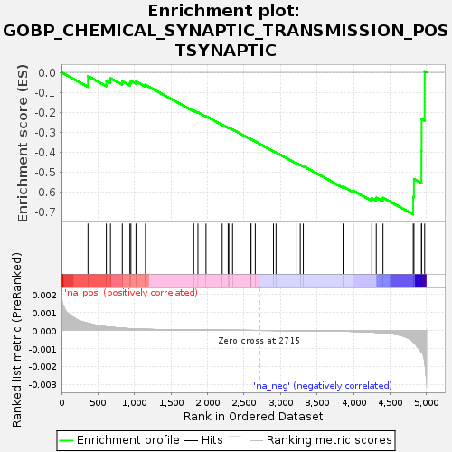
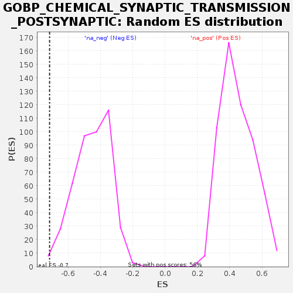

| Dataset | GEP2_vs_GEP6_residuals |
| Phenotype | NoPhenotypeAvailable |
| Upregulated in class | na_neg |
| GeneSet | GOBP_CHEMICAL_SYNAPTIC_TRANSMISSION_POSTSYNAPTIC |
| Enrichment Score (ES) | -0.713966 |
| Normalized Enrichment Score (NES) | -1.5798386 |
| Nominal p-value | 0.0112866815 |
| FDR q-value | 0.5332819 |
| FWER p-Value | 1.0 |

| SYMBOL | RANK IN GENE LIST | RANK METRIC SCORE | RUNNING ES | CORE ENRICHMENT | |
|---|---|---|---|---|---|
| 1 | ARRB2 | 363 | 0.000 | -0.0193 | No |
| 2 | ADORA2A | 614 | 0.000 | -0.0425 | No |
| 3 | CHRNA6 | 671 | 0.000 | -0.0297 | No |
| 4 | P2RX7 | 833 | 0.000 | -0.0452 | No |
| 5 | ADRB2 | 937 | 0.000 | -0.0527 | No |
| 6 | NLGN2 | 951 | 0.000 | -0.0428 | No |
| 7 | DLG4 | 1020 | 0.000 | -0.0456 | No |
| 8 | RELN | 1150 | 0.000 | -0.0629 | No |
| 9 | RGS4 | 1811 | 0.000 | -0.1925 | No |
| 10 | GLRB | 1869 | 0.000 | -0.2010 | No |
| 11 | SNCA | 1979 | 0.000 | -0.2204 | No |
| 12 | NPAS4 | 2201 | 0.000 | -0.2632 | No |
| 13 | SHANK1 | 2283 | 0.000 | -0.2781 | No |
| 14 | TMEM108 | 2292 | 0.000 | -0.2782 | No |
| 15 | CHRNA9 | 2343 | 0.000 | -0.2871 | No |
| 16 | GRIK2 | 2582 | 0.000 | -0.3346 | No |
| 17 | GRIA1 | 2589 | 0.000 | -0.3354 | No |
| 18 | INSYN1 | 2596 | 0.000 | -0.3363 | No |
| 19 | SLC29A1 | 2654 | 0.000 | -0.3475 | No |
| 20 | SLC8A3 | 2903 | -0.000 | -0.3968 | No |
| 21 | NRXN1 | 2938 | -0.000 | -0.4029 | No |
| 22 | GRIN2A | 3224 | -0.000 | -0.4584 | No |
| 23 | SHANK3 | 3270 | -0.000 | -0.4653 | No |
| 24 | KCNK2 | 3312 | -0.000 | -0.4713 | No |
| 25 | BEGAIN | 3856 | -0.000 | -0.5747 | No |
| 26 | MET | 3994 | -0.000 | -0.5947 | No |
| 27 | P2RX6 | 4250 | -0.000 | -0.6331 | Yes |
| 28 | P2RX1 | 4311 | -0.000 | -0.6304 | Yes |
| 29 | GRIN1 | 4403 | -0.000 | -0.6308 | Yes |
| 30 | NETO1 | 4817 | -0.001 | -0.6264 | Yes |
| 31 | PTK2B | 4827 | -0.001 | -0.5366 | Yes |
| 32 | MEF2C | 4930 | -0.001 | -0.3963 | Yes |
| 33 | LRRK2 | 4932 | -0.001 | -0.2349 | Yes |
| 34 | P2RX5 | 4974 | -0.002 | 0.0050 | Yes |
